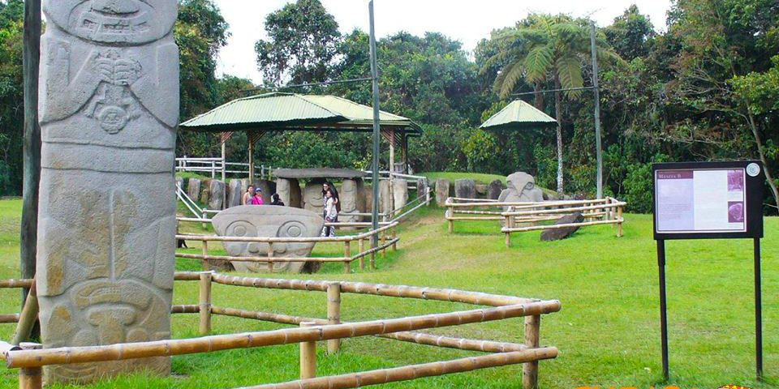

OPINIÓN PERSONAL

- Este sitio es muy importante para la cultura de nuestro país, y es de mucho interés turistico tanto nacional como internacional, además de que es de vital importancia para la antropología y para conocer la historia de nuestros antepasados.
- Se siembra un interés cultural por la antropología de nuestro país, y nace un deseo por vivir una aventura en este territorio ancestral, también, conocer la historia de nuestros antepasados.